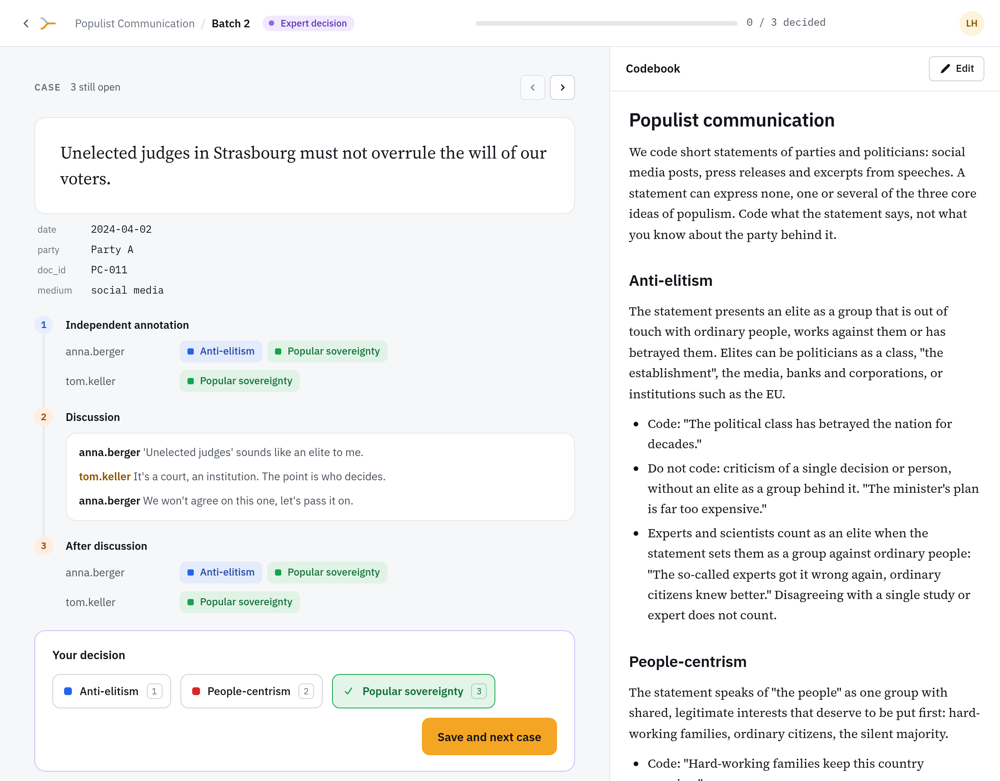
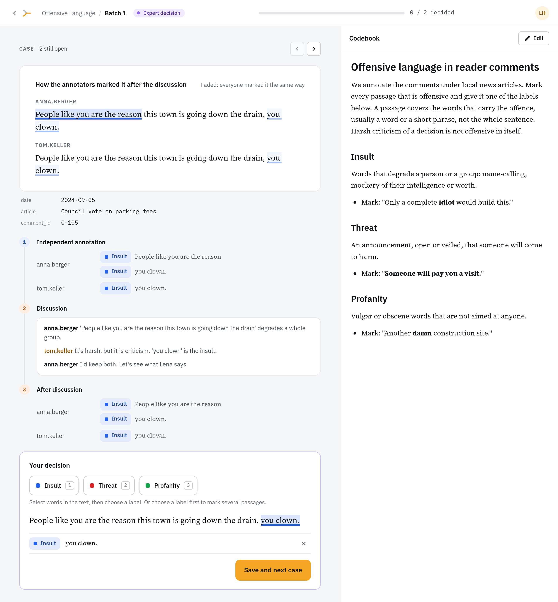
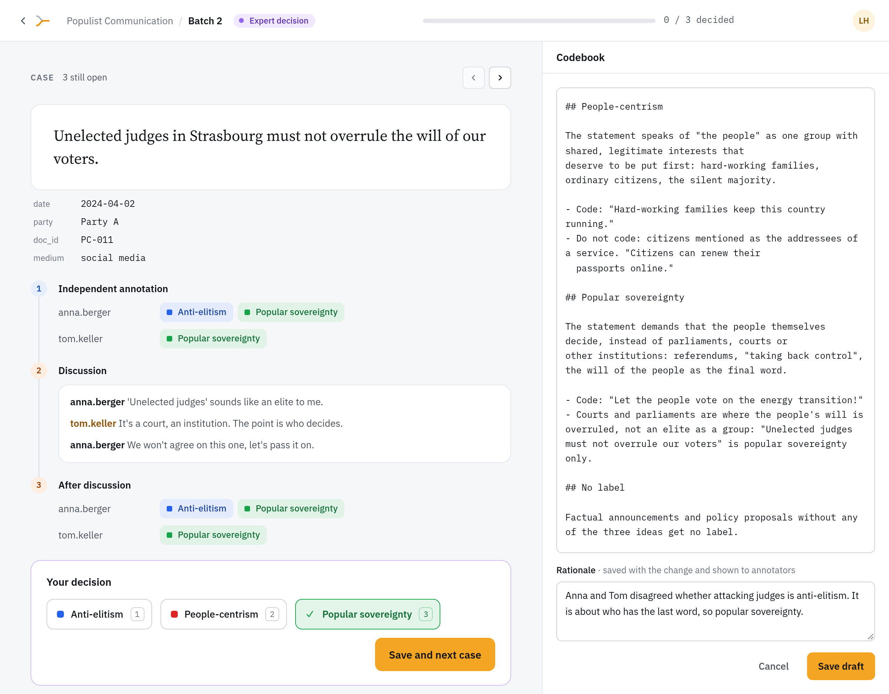

Decide disagreements
Texts the annotators still label differently after the discussion go to the experts of the batch. You decide which label each of them gets, and wherever a disagreement shows that the codebook is unclear, you make it clearer in the same step. The next batch then starts with the better rule.
Find the open cases
When the discussion of a batch has ended with disagreements left, its experts get a notification. The home page shows the batch under Waiting for you with Resolve disagreements; on the project page, the batch card has a button Resolve … disagreements.
Decide a case
The decision page shows one case at a time, with how many are still open at the top:
the text, with its further information if the project shows it,
How the team got here: how each annotator labeled the text on their own, the chat of their discussion, and their labels after discussing,
Your decision: the labels you give the text,
the codebook on the right.
Your decision starts with the labels every annotator kept after the discussion; the contested ones are left open. Add or remove labels, as the annotators did, and click Save and next case. You are not limited to the labels the annotators chose: if both missed one, choose it. Choosing no label is a decision as well.


Anna saw anti-elitism in the judges, Tom did not. The decision starts with Popular sovereignty, which both kept.
In projects with spans in the text, the page shows at the top how each annotator marked the text after the discussion; what everyone marked the same way is faded. Your decision starts with the passages all of them marked, and you change it in the span editor as during annotation.


Anna marked a second insult, Tom did not. The decision starts with “you clown”, which both marked.
The arrows at the top go to the previous and the next case. A case you have decided says Decision saved; Edit decision lets you correct it, and Save correction saves the new decision. The earlier one is not lost: the correction is recorded in the codebook’s history.
When you have decided the last case, the batch is finished.
Improve the codebook while you decide
A disagreement often comes from a rule that leaves room for two readings. Change the codebook right there, next to the case:
Click Edit in the codebook panel.
Change the text, and write in Rationale why: annotators see it with the change, under Why it changed.
Click Save draft. The panel marks the codebook as Uncommitted draft; you can Continue editing it or Discard draft.
Save your decision. The draft is saved with it as a new version of the codebook, linked to the case you decided.


A new rule and its rationale, saved together with the decision.
The annotators of the next batch see the change on their Codebook changes page, and the history of the codebook shows which case it came from, see Codebook changes.
If someone else changes the codebook while your draft is open, Arbiter does not save your decision with it: discard the draft and make your change again on the current version.
Several experts
A batch usually has one expert. If it has more, each of them decides every case on their own, and the batch is finished as soon as one of them has decided all. Where the experts decided differently, the list of samples says Experts disagree.